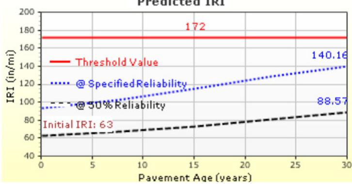
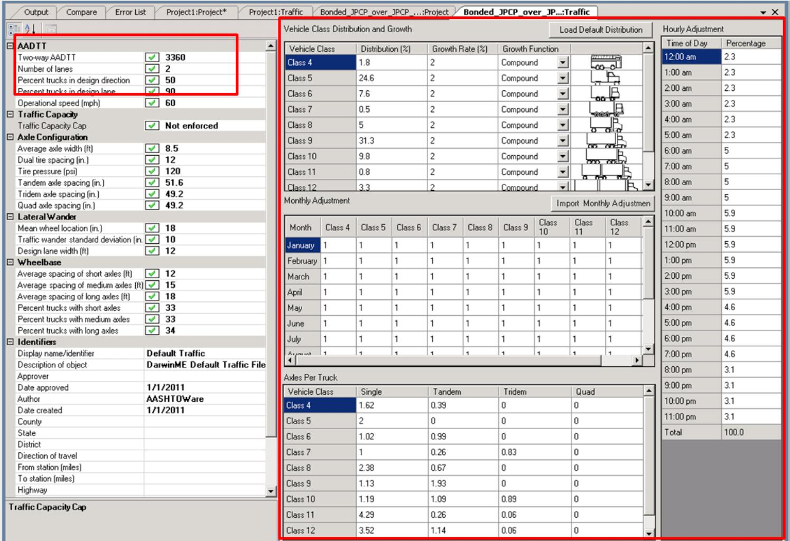
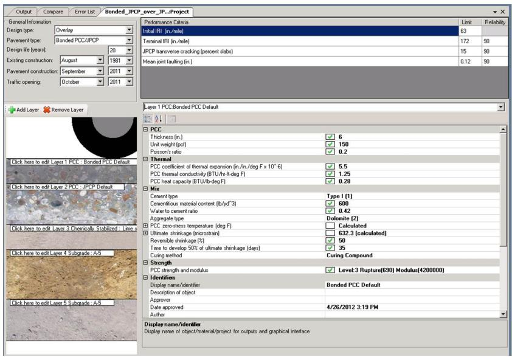

Dynamic Load Modeling for Pavement Design
Dynamic Load Modeling for Pavement Design is a mechanistic‑empirical procedure that quantifies the cumulative damage inflicted by mixed vehicle traffic on a pavement by converting all axle loads into an equivalent number of standard 18 000‑lb single‑axle loads (ESALs) [1][3]. Implemented in AASHTOWare Pavement ME Design, the model assembles a traffic load spectrum—describing vehicle‑class distribution, axle weights and geometries—and applies directional, lane‑distribution, growth and seasonal adjustment factors to project total ESALs over a 20‑year design period [1][3]. When site‑specific classification or weigh‑in‑motion data are unavailable, Level 3 default values derived from the nationally compiled LTPP database are used, ensuring that vehicle groups correspond to the road’s functional classification (e.g., TTC11 for principal arterials) [3].
Sources (5)
Purpose and design objectives
Dynamic load modeling addresses the need to quantify the cumulative impact of varied vehicle traffic on pavement structures by converting all axle loads into an equivalent number of standard 18,000‑lb single‑axle loads (ESALs). Dynamic Load Modeling for Pavement Design is intended to solve the problem of accurately representing the complex traffic loading that a pavement will experience over its service life so that designers can predict structural performance and ensure durability. Traffic inputs for the AASHTOWare Pavement ME Design are based on traffic load spectra, which describe the vehicle class distribution in terms of the number, weight, and geometries of the associated axle loads within each classification. Design ESALs serve as the main traffic input. [1][3]
The following figure illustrates the predicted International Roughness Index results generated by this design methodology.

Predicted IRI plot for a 9-inch unbonded overlay with dowels showing performance over pavement age. [3]This plot illustrates the output of such modeling by quantifying the cumulative impact of traffic on surface roughness, demonstrating how the predicted IRI trends upward from an initial value toward a threshold limit.
[1] — Ch. 10 (pp. 320–331); [3] — 1. Introduction (pp. 25–47)
Scope and applicability
Dynamic Load Modeling in the AASHTOWare Pavement ME Design is appropriate for projects that involve concrete pavement structures or overlay applications, where a detailed traffic load spectrum—including vehicle class distribution, axle weights, and seasonal/diurnal patterns—is needed. The method can be used when project‑specific traffic data from automated vehicle classification or weigh‑in‑motion measurements are available, but it also permits the use of default national distributions if such data are not provided. It relies on inputs such as annual average daily truck traffic, directional and lane distribution factors, axle load distribution factors, and growth rates for each vehicle class. [3]
The following figure illustrates the traffic input interface within the AASHTOWare Pavement ME Design software where these parameters are configured.

Screen capture of the AASHTOWare Pavement ME Design Traffic Menu. [3]The figure displays the main traffic input screen for the AASHTOWare Pavement ME Design software, which is used to define the traffic load spectrum for pavement analysis. Visible fields include inputs for annual average daily truck traffic (AADTT), directional and lane distribution factors, vehicle class growth rates, monthly adjustment factors, axles per truck, and hourly truck distribution factors.
[3] — 1. Introduction (pp. 25–26)
Design inputs and requirements
Dynamic load modeling for pavement design is governed primarily by the AASHTO design methodology, which requires that structural capacity be expressed as the number of equivalent single‑axle loads and uses the “Summation of equivalent 18,000 lb single‑axle loads used to combine mixed traffic to design traffic for the design period.” This establishes the performance requirement of an “Expression of the ability of a pavement to carry traffic loads” and relies on the definition of “Equivalent Single-Axle Loads (ESALs).”
The model must also be built in accordance with AASHTOWare Pavement ME Design default values (Level 3) based on nationally developed distributions from the LTPP database. Traffic inputs are constrained by the road functional classification; the default distribution is loaded according to the road functional classification, and for principal arterials (Interstate and Defense) the TTC group may be selected as TTC11 for major multi‑trailer routes or TTC5 for a major single- and multi-trailer route. For the traffic growth, a rate of 2% (compound growth) is used for all vehicle classes in this example, while some examples specify an initial 2-way AADTT of 3,220 and a growth rate of 2.5% (linear). Projected loading is expressed as Future ESALs (20-year design life): 24,000,000. Additional project constraints include a directional distribution of 50% and a design lane distribution factor of 90%. [1][3]
[1] — Ch. 10 (pp. 320–331); [3] — 1. Introduction (pp. 37–66)
Design methods and criteria
Dynamic Load Modeling for Pavement Design relies on the AASHTO design methodology, which quantifies a pavement’s structural capacity by expressing it as a count of equivalent single‑axle loads. The modeling is performed with the AASHTOWare Pavement ME Design software. The procedure starts by defining the design equivalent single axle loads (ESALs), which constitute the primary traffic input; users may type an ESAL value directly or activate the built‑in “Estimate ESALs” function that calculates a project‑specific total from required parameters. Traffic inputs are based on traffic load spectra, describing the vehicle class distribution in terms of number, weight, and geometry of axle loads within each classification. The main Traffic screen requires the annual average daily truck traffic (AADTT), the directional distribution factor, and the lane distribution factor, along with basic data such as lane count and operating speed. A series of adjustment factors then refine the load spectra: vehicle‑class distribution selected by functional classification and TTC group, a growth rate entered as either linear or compound, monthly and hourly truck distributions, axle‑load distribution for single, tandem, tridem, and quad configurations obtained from WIM data, and general axle configuration parameters such as lateral wander and wheelbase. When site‑specific information is lacking, default Level 3 values derived from nationally developed LTPP database distributions are used. Design ESALs serve as the main traffic input that drives cumulative damage calculations, layer thickness selection, material choices, and performance predictions within the mechanistic‑empirical analysis framework. [1][3]
The following figure illustrates the interface of the AASHTOWare Pavement ME Design software used for this analysis.

AASHTOWare Pavement ME Design software interface showing project parameters and material properties. [3]The software screen presents specific project inputs such as design type and layer thicknesses alongside performance criteria limits.
[1] — Ch. 10 (p. 331); [3] — 1. Introduction (pp. 25–66)
The dynamic load model must be based on a 20‑year design life and employ projected cumulative traffic expressed in ESALs. Projected traffic loading is specified in the examples as 24.78 million ESALs, 24 million ESALs, 11.47 million ESALs, or up to 56.283 million ESALs depending on the corridor forecast. The model assumes an initial two‑way AADTT ranging from 1,400 to 16,800 vehicles, with a compound growth rate of 2 % per year (or a linear 2.5 % per year where indicated). Traffic is assumed to be split evenly between directions (50 %) and a lane distribution factor of typically 90 % (with alternatives of 85 % or 100 % for the design lane) is applied. The model must use AASHTOWare Pavement ME Design Level 3 default values derived from the LTPP database, select vehicle‑class groups consistent with the functional classification (e.g., TTC11 for major multi‑trailer routes on a Principal Arterial), and incorporate standard traffic volume adjustment factors (monthly/hourly truck distributions) and axle load spectra (standard axle configurations, lateral wander, wheelbase). An operating speed of 60 mph is assumed. No explicit safety factor or reliability threshold is stated in the source material; therefore the design relies on the default reliability assumptions embedded in the AASHTOWare Level 3 methodology.
Key verbatim statements: - “The dynamic load model must be based on a projected traffic loading of 24.78 million ESALs over the 20‑year design period.” (piece 2) - “The dynamic load model must be built on the AASHTOWare Pavement ME Design Level 3 default values derived from the LTPP database, using a vehicle‑class distribution that matches the road’s functional classification (Principal Arterial) and selecting the TTC11 group for major multi‑trailer routes.” (piece 3) - “Dynamic load modeling for pavement design must be based on a 20‑year design life with an estimated cumulative traffic loading of roughly eleven point four seven million ESALs.” (piece 6) [3]
[3] — 1. Introduction (pp. 35–64)
Drainage, environment, and accessibility
Dynamic Load Modeling for Pavement Design must embed key geometric and user‑traffic parameters such as the number of lanes per direction, directional and lane distribution percentages, and the design operating speed. It also requires detailed traffic inputs including the initial two‑way AADTT for trucks, vehicle class distributions tied to road functional classification, a compound growth rate, monthly and hourly truck distribution patterns, and axle‑load characteristics like configuration, lateral wander and wheelbase. Together these factors ensure that the model reflects both the physical roadway layout and the expected user traffic loads that influence safety and accessibility performance. [3]
[3] — 1. Introduction (pp. 37–38)
References
- Integrated Materials and Construction Practices for Concrete Pavement: A State-of-the-Practice Manual (2nd edition IMCP Manual, 2019) [link]
- Guide to Full-Depth Reclamation (FDR) with Cement (2017, reprinted 2019) [link]
- Guide to the Design of Concrete Overlays Using Existing Methodologies (2012) [link]
- Guide for Partial-Depth Repair of Concrete Pavements (2012) [link]
- Performance Assessment of Nonwoven Geotextile Materials Used as the Separation Layer for Unbonded Concrete Overlays of Existing Concrete Pavements in the US (Guide–2018) [link]